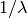
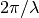

spectral¶
-
astropy.units.spectral() [edit on github][source]¶ Returns a list of equivalence pairs that handle spectral wavelength, wave number, frequency, and energy equivalences.
Allows conversions between wavelength units, wave number units, frequency units, and energy units as they relate to light.
There are two types of wave number:
- spectroscopic -  (per meter)
- angular -  (radian per meter)